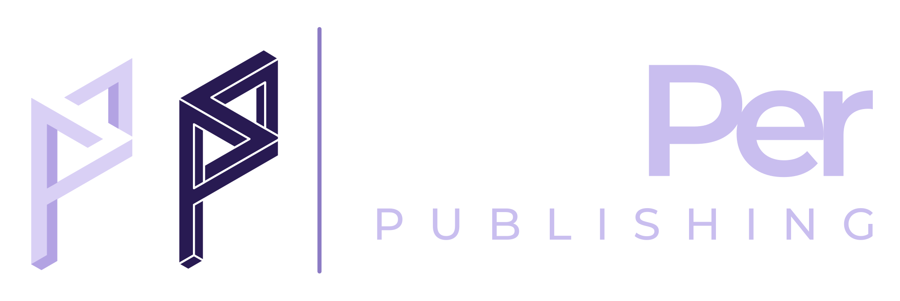
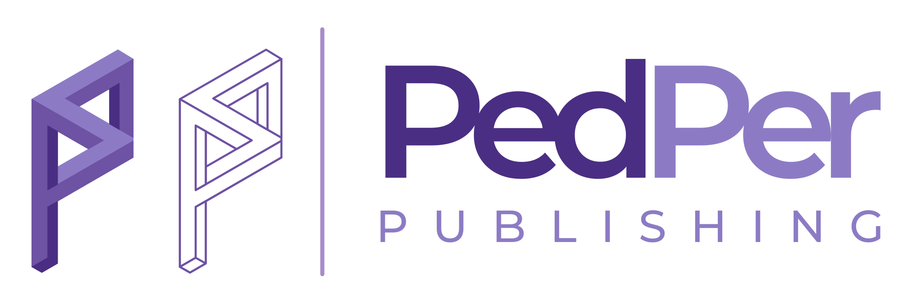
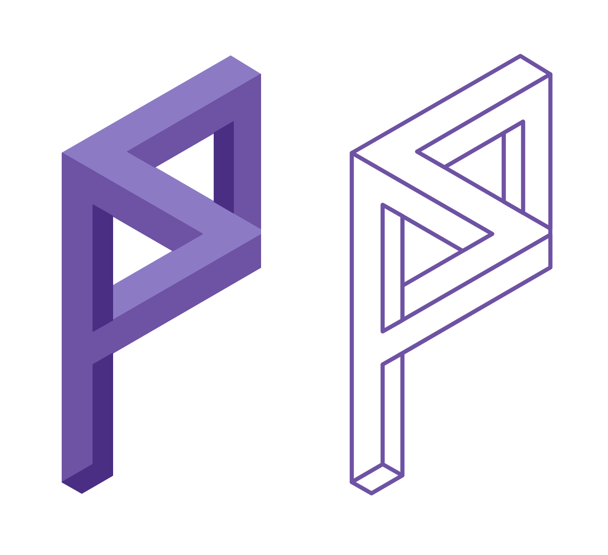
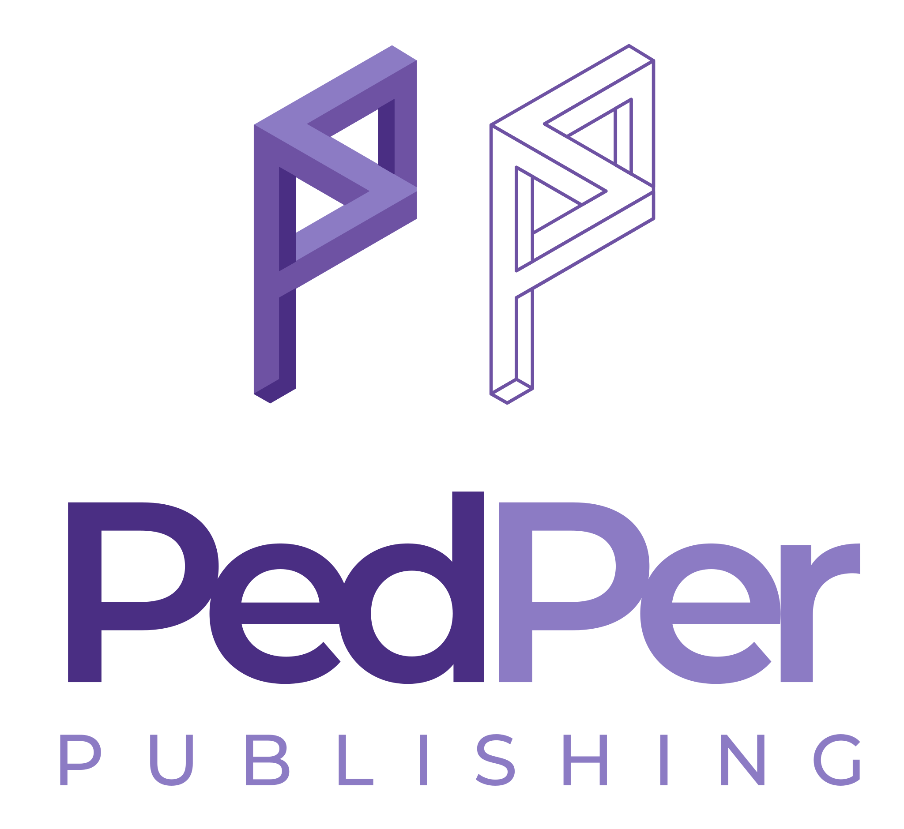
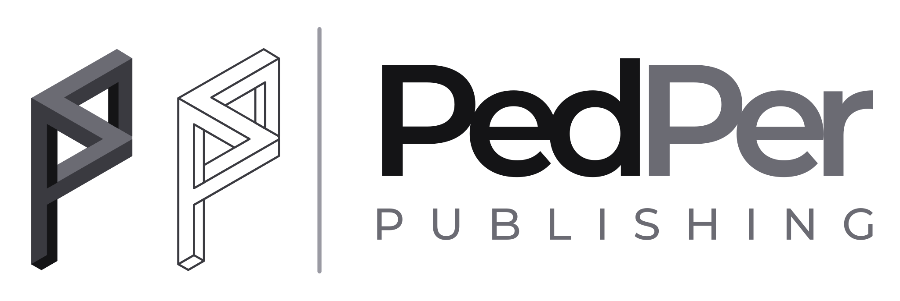
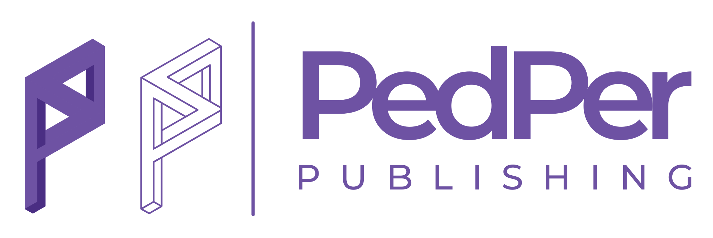
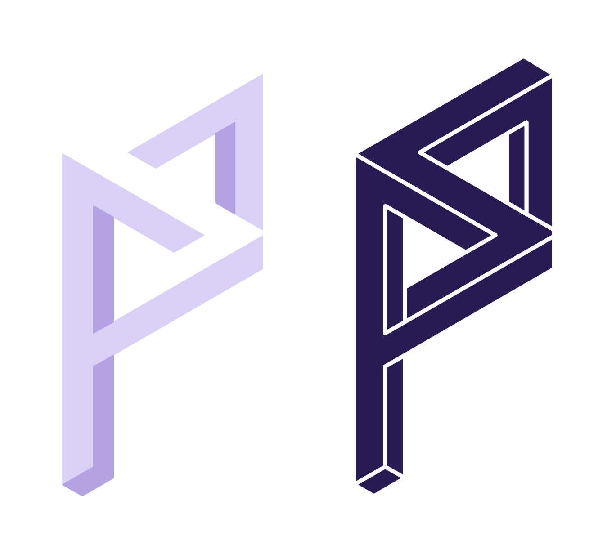

Akademik yayıncılık için
görsel kimlik rehberi

Logo, izometrik perspektifte çizilmiş iki “P” harfinden oluşan bir sembol ile PedPer Publishing kelime işaretinin birleşimidir. Dolu ve çizgisel iki P, yayımlanan bilginin hem sağlam hem de açık olduğunu anlatır.
Üç tonlu, katı form. Yayımlanan bilginin derinliğini ve sağlam yapısını temsil eder.
Aynı formun tel çerçevesi. Açık erişimi ve şeffaf editoryal süreçleri temsil eder.
Sembolü kelime işaretinden ayıran ince, dikey Lavanta çizgi.
“Ped” Koyu Mor, “Per” ve PUBLISHING Logo Lavanta; Montserrat.
x = logo yüksekliğinin %50’si. Bu alana metin, görsel veya başka bir öğe girmemelidir.


Bu boyutların altında çizgisel P okunurluğunu yitirir; daha küçük alanlarda yalnızca sembol kullanılır.
Her mecra için hazır bir versiyon vardır. Öncelik her zaman beyaz veya çok açık zemin üzerindeki renkli yatay logodur.


Logo dosyaları yalnızca logo/ klasöründeki orijinal SVG’lerden kullanılmalı; yeniden çizilmemeli, öğelerin yeri ve oranı değiştirilmemelidir.
Palet, logonun üç tonlu sembolünden türetilmiştir. Mor tonları kimliği taşır; açık tonlar ferahlık ve okunurluk sağlar.
Sayfaların çoğu beyaz ve açık tonlarda kalır; mor tonları başlık, vurgu ve düğmelerde, Gece Moru kapak ve bantlarda, Lavanta ise küçük vurgu öğelerinde kullanılır.
| Renk | Beyaz üzerinde | Kullanım |
|---|---|---|
| Koyu Mor | 10,4 : 1 | Her metin |
| Marka Moru | 6,2 : 1 | Her metin |
| Logo Lavanta | 3,7 : 1 | Büyük başlık |
| Lavanta | 2,9 : 1 | Metinde değil |
| Gri Metin | 6,8 : 1 | Her metin |
Kelime işaretiyle aynı aileden gelen Montserrat, tüm başlık ve gövde metinlerinde kullanılır. Ücretsizdir, Google Fonts’ta bulunur ve Türkçe karakterleri tam destekler. Yedek yazı tipi: Arial.
Başlıklarda SemiBold veya Bold, gövdede Regular kullanın. Satır aralığını gövdede 1,5–1,6 tutun; satır uzunluğu 60–80 karakteri geçmesin.
Başka yazı tiplerini karıştırmayın, gövde metnini tamamen büyük harfle yazmayın ve Lavanta’yı uzun metinlerde kullanmayın.
PedPer Publishing’in her iletişimde hissettirmesi gereken beş temel özellik.
Bilimsel titizlik ve kanıta dayalı dil.
Şeffaf süreçler, COPE ilkeleri.
Sade, dijital öncelikli tasarım.
Bilgi herkes için ücretsiz.
Zamanında, özenli, net iletişim.
Logonun çevresinde en az logo yüksekliğinin %50’si kadar boş alan olsun.
Renkli logo beyaz veya çok açık zeminde; koyu zeminde koyu zemin versiyonu.
Palet, tipografi ve logo dosyalarını tüm mecralarda aynı biçimde kullanın.
Logodaki izometrik geometriden türeyen yardımcı öğeler. Logo ile yarışmayacak kadar sade kullanılmalıdır.
İzometrik ızgara · koyu zeminlerde doku
Sembol deseni · %10–20 opaklık
Köşe üçgenleri · sayfa köşeleri
Gradyan çizgi · başlık altı vurgu
Marka kimliğinin farklı mecralarda nasıl uygulanacağına dair örnekler.

Pedagoji, öğretmen eğitimi ve eğitim uygulamaları üzerine hakemli, ücretsiz okunan ve ücretsiz yayımlanan araştırmalar.
Dergilerimizi inceleyin →